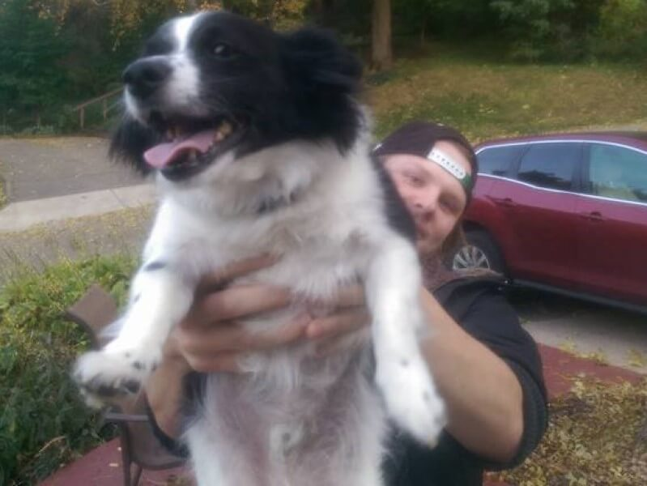
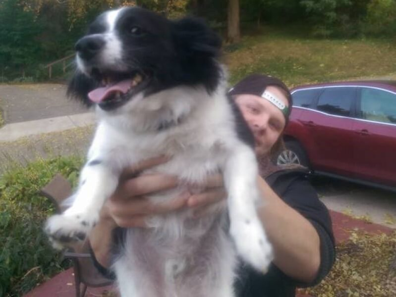

About Me
My name is Ross and I study Web Design and Web Programming at Saint Paul College in St. Paul, Minnesota.
My planned graduation date is May 2025 with a computer programming AAS. I made this website as a portfolio of my skills developing websites.
I have taken the following classes at Saint Paul College:
- Web Fundamentals: I learned HTML and CSS skills to make this website!
- Computer Science and Information
- Introduction to Computing and Computer Science
The next class I will be taking is Java I over the summer semester. In fall I will be pursuing 16 credits in computer programming, including Database Management and Client Side Networking.
My major emphasis will be on the Java Language. Once I graduate I may continue my education by obtaining a bachelors degree.
When I'm not writing code I enjoy skiing in the winter, sailing and tennis in the summer, and board games any season.
Here is a link to my current resume.
Resume
Here is a page with a Flappy Bird clone made with javascript.
Play
Here is a link to check out other websites I've made.
Portfolio
Pictures of Me!
 
